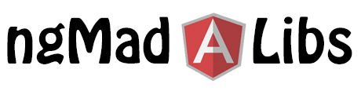
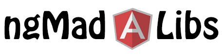

Automate This!
Provide the following words:
{{wordlist.name || 'name'}} was a {{wordlist.job_title || 'job title'}} who loved technology. Although {{ pronouns.subject }} loved parts of {{ pronouns.possessive_adjective }} job, {{ pronouns.subject }} absolutely hated {{wordlist.tedious_task || 'tedious task'}} and {{wordlist.dirty_task || 'dirty task'}}. So, {{wordlist.name || 'name'}} met with {{ pronouns.possessive_adjective }} life mentor, {{wordlist.celebrity || 'celebrity'}}, who told {{ pronouns.object }} to learn how to {{wordlist.useless_skill || 'useless skill'}} with Thinkful. Thinkful didn't offer a course on {{wordlist.useless_skill || 'useless skill'}} so {{ pronouns.subject }} studied programming instead.
What a great decision! With {{ pronouns.possessive_adjective }} new skills, {{wordlist.name || 'name'}} built a(n) {{wordlist.adjective || 'adjective'}} robot named {{wordlist.obnoxious_celebrity || 'obnoxious celebrity'}} that not only loved {{wordlist.dirty_task || 'dirty task'}}, but did it {{wordlist.huge_number || 'huge number'}} times faster!